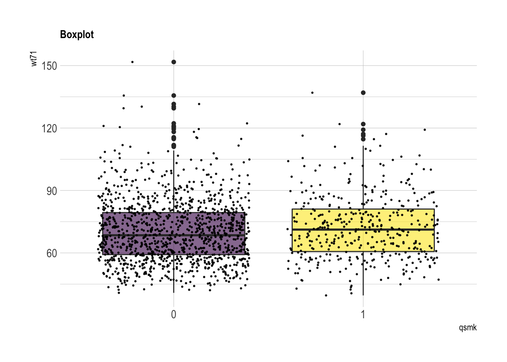
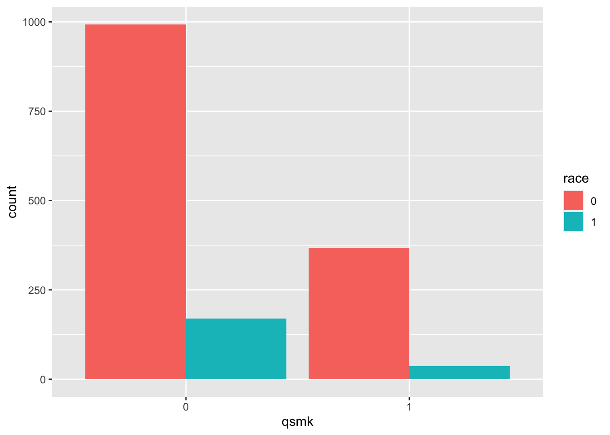
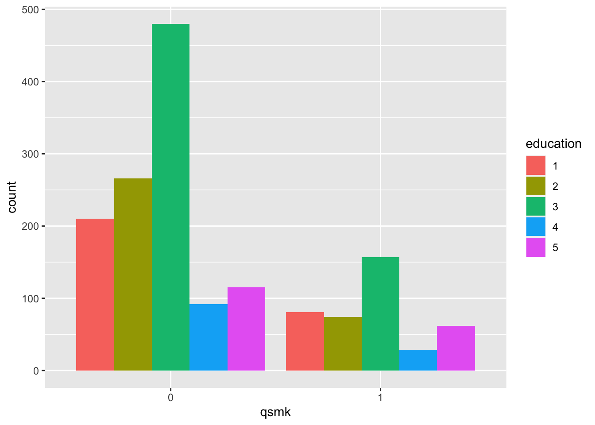
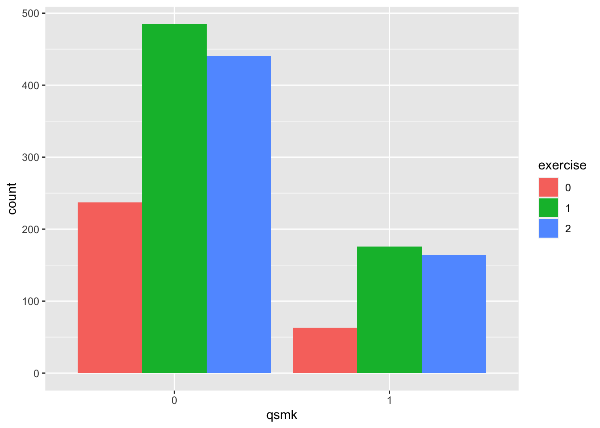

12. IP weighting and marginal structural models
Part 1: Summary of the chapter
Definitions
An individual’s IP weight depends on her values of treatment \(A\) and covariate \(L\). Since the denominator of the weight for each individual is the conditional density evaluated at the individual’s own values of \(A\) and \(L\), it can be expressed as the conditional density evaluated at the random arguments \(A\) and \(L\), that is, as \(f(A|L)\). Therefore, we write the IP weights as \(1/f(A|L)\).
Potential outcome mean for treatment level \(A=a\): \(E(Y^{a})\)
Standardized mean for treatment level \(A=a\): \(\sum_{l}E(Y|A=a, L=l)P(L=l)\)
IP weighted mean of \(Y\) for treatment level \(A=a\): \(E\left(\frac{I(A=a)Y}{f(A|L)}\right)\)
0.0.1 More about conditional exchangeability assumption
First, the conditional exchangeability assumption is also called unconfoundedness. The latter name is much easier to understand the meaning of this assumption
Next, why do we call it conditional exchangeability?
Conditional exchangeability means condtionining on \(X\), the treatment group is comparable to the control group. More precisely, it means \(f(Y^{(a=1)}|A=0, X)=f(Y^{(a=1)}|A=1, X)\). It is equivalent to \(Y^{(a=1)}\perp A|X\). Therefore, condtional exchangeability and unconfoundedness are the same thing.
- Third, unconfoundedness implies no unobserved/unmeasured confounders.
- Suppose there exists unmeasured confounding \(X_u\), then we have \(Y^{(a=0)}=f_0(X, X_u)\), \(Y^{(a=1)}=f_1(X, X_u)\) and \(A=f_A(X, X_u)\). Therefore, only conditioning on \(X\) would not make unconfoundedness satisfied.
- Since unconfoundedness is the key assumption to identify the causal effect, so based on the above reasoning, when we assume the unconfoundness, we also implicitly assume no unmeasured confounders.
Equivalence of IP weighting and standardization
Under the positivity assumption, we have \[\begin{equation*} \begin{split} E\left(\frac{I(A=a)Y}{f(A|L)}\right)=E_{A, L}\left( E_{Y}(\frac{I(A=a)}{f(A|L)}Y|A, L)\right)=E_{A, L}\left( E_{Y}(Y|A, L)\frac{I(A=a)}{f(A|L)}\right) \\ = E_{L}\left(E_{A}\left( E_{Y}(Y|A, L)\frac{I(A=a)}{f(A|L)}|L\right)\right)=E_{L}\left( E_{Y}(Y|A=a, L)|L\right) \\ =\sum_{l}E(Y|A=a, L=l)P(L=l) \end{split} \end{equation*}\]
Note: we require the positivity to make sure that \(\frac{I(A=a)}{f(A|L)}\) is well-defined.
Equivalence of potential outcome mean, standardized mean and IP weighted mean
- First, we show \(E(Y^a)=\sum_{l}E(Y|A=a, L=l)P(L=l)\) under conditional exchangeability, positivity, and consistency.
- Second, we show \(E(Y^a)=E\left( \frac{I(A=a)}{f(A|L)}Y \right)\) under positivity, conditional exchangeability, and consistency.
What does IP weighting mean?
IP weighting creates a pseudo-population in which the arrow from the covariates \(L\) to the treatment \(A\) is removed (ther is no association between covariates \(L\) and the treatment \(A\)). The pseudo-population has the following two properties: - \(A\) and \(L\) are statistically independent - The mean \(E_{ps}(Y|A=a):=E\left(\frac{I(A=a)}{f(A|L)}Y\right)\) in the pseudo-population equals the standardized mean \(\sum_{l}E(Y|A=a, L=l)P(L=l)\) in the actual population under positivity. (See the above section equivalence of IP weighting and standardization for a detailed proof.)
An example
The following example illustrates the fact that inverse probability weighting removes confounding by creating a pseudo-population in which the treatment is independent of the measured confounders.
- The original population:
| A=0 | A=1 | Total | |
|---|---|---|---|
| L=0 | P(A=0|L=0)a | P(A=1|L=0)a | a |
| L=1 | P(A=0|L=1)b | P(A=1|L=1)b | b |
| a+b |
- The pseudo-population:
| A=0 | A=1 | Total | |
|---|---|---|---|
| L=0 | a | a | 2a |
| L=1 | b | b | 2b |
| 2(a+b) |
From the above table, we can find in the pseudo-population, \[P_{ps}(A=0|L=0)=P_{ps}(A=0|L=1)=P_{ps}(A=0)=\frac{1}{2}\] and \[P_{ps}(A=1|L=0)=P_{ps}(A=1|L=1)=P_{ps}(A=1)=\frac{1}{2}.\]
The IP weights simulate a pseudo-population in which all members of the original population are replaced by two copies of themselves. One copy receives treatment \(A=1\) and the other copy receives treatment value \(A=0\).
Horvitz-Thompson estimator and Hajek estimator
The IP weighted mean can be consistently estimated by Horvitz-Thompson estimator \(\widehat{E}(\frac{I(A=a)}{f(A|L)}Y)\)
Note under positivity, \(\frac{E(\frac{I(A=a)}{f(A|L)}Y)}{E(\frac{I(A=a)}{f(A|L)})}=E(\frac{I(A=a)}{f(A|L)}Y)\). Hence, the Hajek estimator \(\frac{\widehat{E}(\frac{I(A=a)}{f(A|L)}Y)}{\widehat{E}(\frac{I(A=a)}{f(A|L)})}\) can also be used to estimate the IP weighted mean. In practice, the Hajek estimator is preferred because it is guaranteed to lie between 0 and 1 for dichotomous \(Y\).
Stablized IP weights
Several facts from mathematics: under positivity, conditional exchangeability, and consistency, \[\begin{equation*} \frac{E(\frac{pI(A=a)}{f(A|L)}Y)}{E(\frac{pI(A=a)}{f(A|L)})}=E(Y^a), \end{equation*}\] and \[\begin{equation*} \frac{E(\frac{g(A)I(A=a)}{f(A|L)}Y)}{E(\frac{g(A)I(A=a)}{f(A|L)})}=E(Y^a), \end{equation*}\] where g(A) is any function of \(A\) that is not a function of \(L\). Usually we take \(g(A)=f(A)\).
The IP weights \(W^{A}=1/f(A|L)\) are referred to as nonstabilized weights, and the IP weights \(SW^{A}=f(A)/f(A|L)\) are referred to as stabilized weights. The stablizing factor \(f(A)\) in the numerator is responsible for the narrower range of the \(f(A)/f(A|L)\) weights.
More on IPW: http://www.rebeccabarter.com/blog/2017-07-05-ip-weighting/
Marginal structural models
Examples of marginal structural mean models: \[E(Y^a)=\beta_0+\beta_1a\] or \[E(Y^a)=\beta_0+\beta_1a+\beta_2a^2. \]
How do we use marginal structural models? If we assume the marginal structural mean model \(E(Y^a)=\beta_0^*+\beta_1^*a\), then we have \[E\left(\frac{I(A=a)}{f(A|L)}Y\right)=E(Y^a)=\beta_0^*+\beta_1^*a.\] Furthermore, it is easy to show that \[\begin{equation*} E\left(\frac{I(A=a)}{f(A|L)}Y\right)=\text{argmin}_{x}E\left( \frac{I(A=a)}{f(A|L)}(Y-x)^2 \right). \end{equation*}\] Therefore, we have \[\begin{equation*} \beta^*_0, \beta^*_1=\text{argmin}_{\beta_0, \beta_1}E\left( \frac{I(A=a)}{f(A|L)}(Y-\beta_0-\beta_1a)^2 \right). \end{equation*}\] Hence, in the finite sample case, we estimate \(\beta_0^*\) and \(\beta_1^*\) by the following optimization problem: \[\begin{equation*} \hat{\beta}_0, \hat{\beta}_1=\text{argmin}_{\beta_0, \beta_1}\sum_{i=1}^{n} \widehat{W}_i(Y_i-\beta_0-\beta_1a)^2, \end{equation*}\] where \(\widehat{W}_i\) is the estimated IP weight.
Using a similar argument with the above section, we can estimate the model parameters by fitting the linear regression model
Effect modification and marginal structural models
We may include covariates-which may be non-confounders-in a marginal structural model to assess effect modification. Suppose it is hypothesized that the effect of smoking cessation varies by sex V (1: woman, 0: man). To examine this hypothesis, we can assume \[E(Y^a|V)=\beta_0+\beta_1a+\beta_2Va+\beta_3V.\] Then we have \[E(Y^{a=1}|V=1)-E(Y^{a=0}|V=1)=\beta_1+\beta_2\] and \[E(Y^{a=1}|V=0)-E(Y^{a=0}|V=0)=\beta_1.\] Therefore, additive effect modification is present if \(\beta_2\ne 0\).
Part 2: Real data analysis
Background
- NHEFS data (National Health and Nutrition Examination Survey Data I Epidemiologic Follow-up Study)
- Goal: estimate the effect of smoking cessation on weight gain
- \(A=1\): if cigarette smokers reported having quit smoking before the follow-up visit
- \(Y\): the body weight at the follow-up visit minus the body weight at the baseline visit
- \(E(Y^{a=1})\): mean weight gain that would have been observed if all individuals in the population had quit smoking before the follow-up visit
- \(E(Y^{a=0})\): mean weight gain that would have been observed if all individuals in the population had not quit smoking
- Average causal effect: \(E(Y^{a=1})-E(Y^{a=0})\)
library(here) # for path
library(readxl) # for reafing excel files
library(tidyverse)
library(hrbrthemes)
library(viridis)
library(geepack) # for GEE
# copy from https://www.r-graph-gallery.com/89-box-and-scatter-plot-with-ggplot2.htmlInput dataset
nhefs=read_excel(here("data", "NHEFS.xls"))
head(nhefs)## # A tibble: 6 × 64
## seqn qsmk death yrdth modth dadth sbp dbp sex age race income marital school education ht wt71
## <dbl> <dbl> <dbl> <dbl> <dbl> <dbl> <dbl> <dbl> <dbl> <dbl> <dbl> <dbl> <dbl> <dbl> <dbl> <dbl> <dbl>
## 1 233 0 0 NA NA NA 175 96 0 42 1 19 2 7 1 174. 79.0
## 2 235 0 0 NA NA NA 123 80 0 36 0 18 2 9 2 159. 58.6
## 3 244 0 0 NA NA NA 115 75 1 56 1 15 3 11 2 168. 56.8
## 4 245 0 1 85 2 14 148 78 0 68 1 15 3 5 1 170. 59.4
## 5 252 0 0 NA NA NA 118 77 0 40 0 18 2 11 2 182. 87.1
## 6 257 0 0 NA NA NA 141 83 1 43 1 11 4 9 2 162. 99
## # … with 47 more variables: wt82 <dbl>, wt82_71 <dbl>, birthplace <dbl>, smokeintensity <dbl>,
## # smkintensity82_71 <dbl>, smokeyrs <dbl>, asthma <dbl>, bronch <dbl>, tb <dbl>, hf <dbl>, hbp <dbl>,
## # pepticulcer <dbl>, colitis <dbl>, hepatitis <dbl>, chroniccough <dbl>, hayfever <dbl>, diabetes <dbl>,
## # polio <dbl>, tumor <dbl>, nervousbreak <dbl>, alcoholpy <dbl>, alcoholfreq <dbl>, alcoholtype <dbl>,
## # alcoholhowmuch <dbl>, pica <dbl>, headache <dbl>, otherpain <dbl>, weakheart <dbl>, allergies <dbl>,
## # nerves <dbl>, lackpep <dbl>, hbpmed <dbl>, boweltrouble <dbl>, wtloss <dbl>, infection <dbl>, active <dbl>,
## # exercise <dbl>, birthcontrol <dbl>, pregnancies <dbl>, cholesterol <dbl>, hightax82 <dbl>, price71 <dbl>, …Ignore subjects with missing values for weight in 1982
wt82: weight in 1982qsmk: quit smoking between 1st questionnaire and 1982 (Yes:1; No:0)
nhefs.nmv=nhefs[which(!is.na(nhefs$wt82)), ]
nhefs.nmv$qsmk=as.factor(nhefs.nmv$qsmk)Compare the treatment group and the control group
age
summary(nhefs.nmv[which(nhefs.nmv$qsmk==0), ]$age)## Min. 1st Qu. Median Mean 3rd Qu. Max.
## 25.0 33.0 42.0 42.8 51.0 72.0summary(nhefs.nmv[which(nhefs.nmv$qsmk==1), ]$age)## Min. 1st Qu. Median Mean 3rd Qu. Max.
## 25.0 35.0 46.0 46.2 56.0 74.0nhefs.nmv %>% ggplot( aes(x=qsmk, y=age, fill=qsmk)) +
geom_boxplot()+
scale_fill_viridis(discrete = TRUE, alpha=0.6) +
geom_jitter(color="black", size=0.4, alpha=0.9) +
theme_ipsum() +
theme(legend.position="none", plot.title = element_text(size=11)) +
ggtitle("Boxplot") +
xlab("qsmk")wt71
summary(nhefs.nmv[which(nhefs.nmv$qsmk==0), ]$wt71)## Min. 1st Qu. Median Mean 3rd Qu. Max.
## 40.8 59.2 68.5 70.3 79.4 151.7summary(nhefs.nmv[which(nhefs.nmv$qsmk==1), ]$wt71)## Min. 1st Qu. Median Mean 3rd Qu. Max.
## 39.6 60.7 71.2 72.4 81.1 137.0nhefs.nmv %>% ggplot( aes(x=qsmk, y=wt71, fill=qsmk)) +
geom_boxplot()+
scale_fill_viridis(discrete = TRUE, alpha=0.6) +
geom_jitter(color="black", size=0.4, alpha=0.9) +
theme_ipsum() +
theme(legend.position="none", plot.title = element_text(size=11)) +
ggtitle("Boxplot") +
xlab("qsmk")
smokeintensity: number of cigarettes smoked per day in 1971
summary(nhefs.nmv[which(nhefs.nmv$qsmk==0), ]$smokeintensity)## Min. 1st Qu. Median Mean 3rd Qu. Max.
## 1.0 15.0 20.0 21.2 30.0 60.0summary(nhefs.nmv[which(nhefs.nmv$qsmk==1), ]$smokeintensity)## Min. 1st Qu. Median Mean 3rd Qu. Max.
## 1.0 10.0 20.0 18.6 25.0 80.0nhefs.nmv %>% ggplot( aes(x=qsmk, y=smokeintensity, fill=qsmk)) +
geom_boxplot()+
scale_fill_viridis(discrete = TRUE, alpha=0.6) +
geom_jitter(color="black", size=0.4, alpha=0.9) +
theme_ipsum() +
theme(legend.position="none", plot.title = element_text(size=11)) +
ggtitle("Boxplot") +
xlab("qsmk")
smokeyrs: years of smoking
summary(nhefs.nmv[which(nhefs.nmv$qsmk==0), ]$smokeyrs)## Min. 1st Qu. Median Mean 3rd Qu. Max.
## 1.0 15.0 23.0 24.1 32.0 64.0summary(nhefs.nmv[which(nhefs.nmv$qsmk==1), ]$smokeyrs)## Min. 1st Qu. Median Mean 3rd Qu. Max.
## 1 15 26 26 35 60nhefs.nmv %>% ggplot( aes(x=qsmk, y=smokeyrs, fill=qsmk)) +
geom_boxplot()+
scale_fill_viridis(discrete = TRUE, alpha=0.6) +
geom_jitter(color="black", size=0.4, alpha=0.9) +
theme_ipsum() +
theme(legend.position="none", plot.title = element_text(size=11)) +
ggtitle("Boxplot") +
xlab("qsmk")
- sex
table(nhefs.nmv$qsmk, nhefs.nmv$sex)##
## 0 1
## 0 542 621
## 1 220 183prop.table(table(nhefs.nmv$qsmk, nhefs.nmv$sex), margin=1) # row-wise##
## 0 1
## 0 0.466 0.534
## 1 0.546 0.454nhefs.nmv$sex=as.factor(nhefs.nmv$sex)
nhefs.nmv%>%ggplot(aes(x = qsmk, fill = sex)) +
geom_bar(position = "dodge")- race: 0 if white, 1 if black or other in 1971
table(nhefs.nmv$qsmk, nhefs.nmv$race)##
## 0 1
## 0 993 170
## 1 367 36prop.table(table(nhefs.nmv$qsmk, nhefs.nmv$race), margin=1) # row-wise##
## 0 1
## 0 0.8538 0.1462
## 1 0.9107 0.0893nhefs.nmv$race=as.factor(nhefs.nmv$race)
nhefs.nmv%>%ggplot(aes(x = qsmk, fill = race)) +
geom_bar(position = "dodge")
- education (AMOUNT OF EDUCATION BY 1971): 1 if 8TH GRADE OR LESS, 2 if HS DROPOUT, 3 if HS, 4 if COLLEGE DROPOUT, 5 if COLLEGE OR MORE
table(nhefs.nmv$qsmk, nhefs.nmv$education)##
## 1 2 3 4 5
## 0 210 266 480 92 115
## 1 81 74 157 29 62prop.table(table(nhefs.nmv$qsmk, nhefs.nmv$education), margin=1) # row-wise##
## 1 2 3 4 5
## 0 0.1806 0.2287 0.4127 0.0791 0.0989
## 1 0.2010 0.1836 0.3896 0.0720 0.1538nhefs.nmv$education=as.factor(nhefs.nmv$education)
nhefs.nmv%>%ggplot(aes(x = qsmk, fill = education)) +
geom_bar(position = "dodge")
- exercise: 0 if much exercise,1 if moderate exercise,2 if little or no exercise
table(nhefs.nmv$qsmk, nhefs.nmv$exercise)##
## 0 1 2
## 0 237 485 441
## 1 63 176 164prop.table(table(nhefs.nmv$qsmk, nhefs.nmv$exercise), margin=1) # row-wise##
## 0 1 2
## 0 0.204 0.417 0.379
## 1 0.156 0.437 0.407nhefs.nmv$exercise=as.factor(nhefs.nmv$exercise)
nhefs.nmv%>%ggplot(aes(x = qsmk, fill = exercise)) +
geom_bar(position = "dodge")
- active: 0 if very active, 1 if moderately active, 2 if inactive
table(nhefs.nmv$qsmk, nhefs.nmv$active)##
## 0 1 2
## 0 532 527 104
## 1 170 188 45prop.table(table(nhefs.nmv$qsmk, nhefs.nmv$active), margin=1) # row-wise##
## 0 1 2
## 0 0.4574 0.4531 0.0894
## 1 0.4218 0.4665 0.1117nhefs.nmv$active=as.factor(nhefs.nmv$active)
nhefs.nmv%>%ggplot(aes(x = qsmk, fill = active)) +
geom_bar(position = "dodge")Estimating IP weights via modeling
- Step 1: Estimate \(f(A|L)\) by logistic regression and let \(\widehat{W}_i=\frac{1}{\widehat{P}(A|L)}\)
- Step 2: Estimate the IP weighted mean \(E\left(\frac{I(A=a)}{f(A|L)}Y\right)\) by Hajek estimator \(\frac{\sum_{i}\widehat{W}_iY_i}{\sum_{i}\widehat{W}_i}\), where the sum is over all subjects with \(A_i=a\)
## run logistic regression
logfit<-glm(
qsmk~sex+race+age+I(age^2)+education+smokeintensity+I(smokeintensity^2)+
smokeyrs+I(smokeyrs^2)+exercise+active+wt71+I(wt71^2),
family=binomial(),
data=nhefs.nmv
)
summary(logfit)##
## Call:
## glm(formula = qsmk ~ sex + race + age + I(age^2) + education +
## smokeintensity + I(smokeintensity^2) + smokeyrs + I(smokeyrs^2) +
## exercise + active + wt71 + I(wt71^2), family = binomial(),
## data = nhefs.nmv)
##
## Deviance Residuals:
## Min 1Q Median 3Q Max
## -1.513 -0.791 -0.639 0.983 2.373
##
## Coefficients:
## Estimate Std. Error z value Pr(>|z|)
## (Intercept) -2.242519 1.380836 -1.62 0.10437
## sex1 -0.527478 0.154050 -3.42 0.00062 ***
## race1 -0.839264 0.210067 -4.00 6.5e-05 ***
## age 0.121205 0.051266 2.36 0.01807 *
## I(age^2) -0.000825 0.000536 -1.54 0.12404
## education2 -0.028776 0.198351 -0.15 0.88465
## education3 0.086432 0.178085 0.49 0.62744
## education4 0.063601 0.273211 0.23 0.81592
## education5 0.475961 0.226224 2.10 0.03538 *
## smokeintensity -0.077270 0.015250 -5.07 4.0e-07 ***
## I(smokeintensity^2) 0.001045 0.000287 3.65 0.00027 ***
## smokeyrs -0.073597 0.027777 -2.65 0.00806 **
## I(smokeyrs^2) 0.000844 0.000463 1.82 0.06840 .
## exercise1 0.354841 0.180135 1.97 0.04885 *
## exercise2 0.395704 0.187240 2.11 0.03457 *
## active1 0.031944 0.132937 0.24 0.81010
## active2 0.176784 0.214972 0.82 0.41087
## wt71 -0.015236 0.026316 -0.58 0.56262
## I(wt71^2) 0.000135 0.000163 0.83 0.40737
## ---
## Signif. codes: 0 '***' 0.001 '**' 0.01 '*' 0.05 '.' 0.1 ' ' 1
##
## (Dispersion parameter for binomial family taken to be 1)
##
## Null deviance: 1786.1 on 1565 degrees of freedom
## Residual deviance: 1676.9 on 1547 degrees of freedom
## AIC: 1715
##
## Number of Fisher Scoring iterations: 4## calculate estimated probability
p.qsmk.obs=ifelse(nhefs.nmv$qsmk==0,
1-predict(logfit, type="response"),
predict(logfit, type="response") ## this predicts the conditional probability of treatment 1
)
nhefs.nmv$ipw=1/p.qsmk.obs
summary(nhefs.nmv$ipw)## Min. 1st Qu. Median Mean 3rd Qu. Max.
## 1.05 1.23 1.37 2.00 1.99 16.70## run weighted least squares
wls=geeglm(wt82_71~qsmk,
data=nhefs.nmv,
weights=ipw,
id=seqn,
corstr = "independence"
)
summary(wls)##
## Call:
## geeglm(formula = wt82_71 ~ qsmk, data = nhefs.nmv, weights = ipw,
## id = seqn, corstr = "independence")
##
## Coefficients:
## Estimate Std.err Wald Pr(>|W|)
## (Intercept) 1.780 0.225 62.7 2.3e-15 ***
## qsmk1 3.441 0.525 42.9 5.9e-11 ***
## ---
## Signif. codes: 0 '***' 0.001 '**' 0.01 '*' 0.05 '.' 0.1 ' ' 1
##
## Correlation structure = independence
## Estimated Scale Parameters:
##
## Estimate Std.err
## (Intercept) 65.1 4.22
## Number of clusters: 1566 Maximum cluster size: 1## build 95% confidence intervals for coefficients
## use the robust variance estimator, see more details in page 152 of the book
theta=coef(wls)
se=coef(summary(wls))[,2]
ci.lower=theta-qnorm(0.975)*se
ci.upper=theta+qnorm(0.975)*se
cbind(theta, ci.lower, ci.upper)## theta ci.lower ci.upper
## (Intercept) 1.78 1.34 2.22
## qsmk1 3.44 2.41 4.47## estimate average causal effect
## A=1
y1=nhefs.nmv[nhefs.nmv$qsmk==1, ]$wt82_71
w1=nhefs.nmv[nhefs.nmv$qsmk==1, ]$ipw
## A=0
y0=nhefs.nmv[nhefs.nmv$qsmk==0, ]$wt82_71
w0=nhefs.nmv[nhefs.nmv$qsmk==0, ]$ipw
ate=sum(y1*w1)/sum(w1)-sum(y0*w0)/sum(w0)
ate## [1] 3.44## association of sex and qsmk in the original population
xtabs(~nhefs.nmv$sex+nhefs.nmv$qsmk)## nhefs.nmv$qsmk
## nhefs.nmv$sex 0 1
## 0 542 220
## 1 621 183## no association between sex and qsmk in the pseudo-population
xtabs(nhefs.nmv$ipw~nhefs.nmv$sex+nhefs.nmv$qsmk)## nhefs.nmv$qsmk
## nhefs.nmv$sex 0 1
## 0 764 764
## 1 802 797## check for positivity (white women)
xtabs(~nhefs.nmv$age[nhefs.nmv$race==0&nhefs.nmv$sex==1]+
nhefs.nmv$qsmk[nhefs.nmv$race==0&nhefs.nmv$sex==1])## nhefs.nmv$qsmk[nhefs.nmv$race == 0 & nhefs.nmv$sex == 1]
## nhefs.nmv$age[nhefs.nmv$race == 0 & nhefs.nmv$sex == 1] 0 1
## 25 24 3
## 26 14 5
## 27 18 2
## 28 20 5
## 29 15 4
## 30 14 5
## 31 11 5
## 32 14 7
## 33 12 3
## 34 22 5
## 35 16 5
## 36 13 3
## 37 14 1
## 38 6 2
## 39 19 4
## 40 10 4
## 41 13 3
## 42 16 3
## 43 14 3
## 44 9 4
## 45 12 5
## 46 19 4
## 47 19 4
## 48 19 4
## 49 11 3
## 50 18 4
## 51 9 3
## 52 11 3
## 53 11 4
## 54 17 9
## 55 9 4
## 56 8 7
## 57 9 2
## 58 8 4
## 59 5 4
## 60 5 4
## 61 5 2
## 62 6 5
## 63 3 3
## 64 7 1
## 65 3 2
## 66 4 0
## 67 2 0
## 69 6 2
## 70 2 1
## 71 0 1
## 72 2 2
## 74 0 1Stablized IP weights
## estimate the denominator and numerator of the stablized IP weights
denom.logfit<-glm(
qsmk~sex+race+age+I(age^2)+education+smokeintensity+I(smokeintensity^2)+
smokeyrs+I(smokeyrs^2)+exercise+active+wt71+I(wt71^2),
family=binomial(),
data=nhefs.nmv
)
summary(denom.logfit)##
## Call:
## glm(formula = qsmk ~ sex + race + age + I(age^2) + education +
## smokeintensity + I(smokeintensity^2) + smokeyrs + I(smokeyrs^2) +
## exercise + active + wt71 + I(wt71^2), family = binomial(),
## data = nhefs.nmv)
##
## Deviance Residuals:
## Min 1Q Median 3Q Max
## -1.513 -0.791 -0.639 0.983 2.373
##
## Coefficients:
## Estimate Std. Error z value Pr(>|z|)
## (Intercept) -2.242519 1.380836 -1.62 0.10437
## sex1 -0.527478 0.154050 -3.42 0.00062 ***
## race1 -0.839264 0.210067 -4.00 6.5e-05 ***
## age 0.121205 0.051266 2.36 0.01807 *
## I(age^2) -0.000825 0.000536 -1.54 0.12404
## education2 -0.028776 0.198351 -0.15 0.88465
## education3 0.086432 0.178085 0.49 0.62744
## education4 0.063601 0.273211 0.23 0.81592
## education5 0.475961 0.226224 2.10 0.03538 *
## smokeintensity -0.077270 0.015250 -5.07 4.0e-07 ***
## I(smokeintensity^2) 0.001045 0.000287 3.65 0.00027 ***
## smokeyrs -0.073597 0.027777 -2.65 0.00806 **
## I(smokeyrs^2) 0.000844 0.000463 1.82 0.06840 .
## exercise1 0.354841 0.180135 1.97 0.04885 *
## exercise2 0.395704 0.187240 2.11 0.03457 *
## active1 0.031944 0.132937 0.24 0.81010
## active2 0.176784 0.214972 0.82 0.41087
## wt71 -0.015236 0.026316 -0.58 0.56262
## I(wt71^2) 0.000135 0.000163 0.83 0.40737
## ---
## Signif. codes: 0 '***' 0.001 '**' 0.01 '*' 0.05 '.' 0.1 ' ' 1
##
## (Dispersion parameter for binomial family taken to be 1)
##
## Null deviance: 1786.1 on 1565 degrees of freedom
## Residual deviance: 1676.9 on 1547 degrees of freedom
## AIC: 1715
##
## Number of Fisher Scoring iterations: 4numer.logfit<-glm(qsmk~1,
family=binomial(),
data=nhefs.nmv)
summary(numer.logfit)##
## Call:
## glm(formula = qsmk ~ 1, family = binomial(), data = nhefs.nmv)
##
## Deviance Residuals:
## Min 1Q Median 3Q Max
## -0.771 -0.771 -0.771 1.648 1.648
##
## Coefficients:
## Estimate Std. Error z value Pr(>|z|)
## (Intercept) -1.0598 0.0578 -18.3 <2e-16 ***
## ---
## Signif. codes: 0 '***' 0.001 '**' 0.01 '*' 0.05 '.' 0.1 ' ' 1
##
## (Dispersion parameter for binomial family taken to be 1)
##
## Null deviance: 1786.1 on 1565 degrees of freedom
## Residual deviance: 1786.1 on 1565 degrees of freedom
## AIC: 1788
##
## Number of Fisher Scoring iterations: 4pd.qsmk=predict(denom.logfit, type="response")
pn.qsmk=predict(numer.logfit, type="response")
nhefs.nmv$sw=ifelse(nhefs.nmv$qsmk==0, ((1-pn.qsmk)/(1-pd.qsmk)), (pn.qsmk/pd.qsmk))## weighted least squares with the stabilized IP weights
wls.sw=geeglm(wt82_71~qsmk,
data=nhefs.nmv,
weights=sw,
id=seqn,
corstr="independence"
)
summary(wls.sw)##
## Call:
## geeglm(formula = wt82_71 ~ qsmk, data = nhefs.nmv, weights = sw,
## id = seqn, corstr = "independence")
##
## Coefficients:
## Estimate Std.err Wald Pr(>|W|)
## (Intercept) 1.780 0.225 62.7 2.3e-15 ***
## qsmk1 3.441 0.525 42.9 5.9e-11 ***
## ---
## Signif. codes: 0 '***' 0.001 '**' 0.01 '*' 0.05 '.' 0.1 ' ' 1
##
## Correlation structure = independence
## Estimated Scale Parameters:
##
## Estimate Std.err
## (Intercept) 60.7 3.71
## Number of clusters: 1566 Maximum cluster size: 1theta=coef(wls.sw)
se=coef(summary(wls.sw))[,2]
ci.lower=theta-qnorm(0.975)*se
ci.upper=theta+qnorm(0.975)*se
cbind(theta, ci.lower, ci.upper)## theta ci.lower ci.upper
## (Intercept) 1.78 1.34 2.22
## qsmk1 3.44 2.41 4.47## no association between sex and qsmk in the pseudo population
xtabs(nhefs.nmv$sw~nhefs.nmv$sex+nhefs.nmv$qsmk)## nhefs.nmv$qsmk
## nhefs.nmv$sex 0 1
## 0 567 197
## 1 595 205## estimate average causal effect
## A=1
y1=nhefs.nmv[nhefs.nmv$qsmk==1, ]$wt82_71
w1=nhefs.nmv[nhefs.nmv$qsmk==1, ]$sw
## A=0
y0=nhefs.nmv[nhefs.nmv$qsmk==0, ]$wt82_71
w0=nhefs.nmv[nhefs.nmv$qsmk==0, ]$sw
ate=sum(y1*w1)/sum(w1)-sum(y0*w0)/sum(w0)
ate## [1] 3.44Marginal structural models
Continuous outcome
- Estimating stabilized weights
- Approaches in the book: we need to estimate the stabilized weights \(SW^A=f(A)/f(A|L)\). For a continuous treatment \(A\), \(f(A|L)\) is a probability density function. We assume that the density \(f(A|L)\) is normal with mean \(\mu_L=E(A|L)\) and constant variance \(\sigma^2\). Then we use a linear regression model to estimate the mean \(E(A|L)\) and variance of residuals \(\sigma^2\) for all combinations of values of \(L\). We also assume the density \(f(A)\) is normal.
## analysis restricted to subjects reporting <=25 cig/day at baseline
nhefs.nmv.s=subset(nhefs.nmv, smokeintensity<=25)
## estimating denominator in ip weights
den.fit.obj=lm(
smkintensity82_71~sex+race+age+I(age^2)+
education+smokeintensity+I(smokeintensity^2)+
smokeyrs+I(smokeyrs^2)+exercise+active+wt71+I(wt71^2),
data=nhefs.nmv.s
)
p.den=predict(den.fit.obj, type="response")
dens.den=dnorm(nhefs.nmv.s$smkintensity82_71,
mean=p.den,
sd=summary(den.fit.obj)$sigma)
## estimating numerator in ip weights
num.fit.obj=lm(smkintensity82_71~1, data=nhefs.nmv.s)
p.num=predict(num.fit.obj, type="response")
dens.num=dnorm(nhefs.nmv.s$smkintensity82_71,
p.num,
summary(num.fit.obj)$sigma)
nhefs.nmv.s$sw.a=dens.num/dens.den
summary(nhefs.nmv.s$sw.a)## Min. 1st Qu. Median Mean 3rd Qu. Max.
## 0.19 0.89 0.97 1.00 1.05 5.10msm.sw.cont=geeglm(wt82_71~smkintensity82_71+I(smkintensity82_71*smkintensity82_71),
data=nhefs.nmv.s,
weights=sw.a,
id=seqn,
corstr="independence")
summary(msm.sw.cont)##
## Call:
## geeglm(formula = wt82_71 ~ smkintensity82_71 + I(smkintensity82_71 *
## smkintensity82_71), data = nhefs.nmv.s, weights = sw.a, id = seqn,
## corstr = "independence")
##
## Coefficients:
## Estimate Std.err Wald Pr(>|W|)
## (Intercept) 2.00452 0.29512 46.13 1.1e-11 ***
## smkintensity82_71 -0.10899 0.03154 11.94 0.00055 ***
## I(smkintensity82_71 * smkintensity82_71) 0.00269 0.00242 1.24 0.26489
## ---
## Signif. codes: 0 '***' 0.001 '**' 0.01 '*' 0.05 '.' 0.1 ' ' 1
##
## Correlation structure = independence
## Estimated Scale Parameters:
##
## Estimate Std.err
## (Intercept) 60.5 4.5
## Number of clusters: 1162 Maximum cluster size: 1beta=coef(msm.sw.cont)
SE=coef(summary(msm.sw.cont))[,2]
lcl=beta-qnorm(0.975)*SE
ucl=beta+qnorm(0.975)*SE
cbind(beta, lcl, ucl)## beta lcl ucl
## (Intercept) 2.00452 1.42610 2.58295
## smkintensity82_71 -0.10899 -0.17080 -0.04718
## I(smkintensity82_71 * smkintensity82_71) 0.00269 -0.00204 0.00743Program 12.5: Dichotomous outcome
Goal: estimate the causal effect of quitting smoking \(A\) (1: yes, 0: no) on the risk of death \(D\) (1: yes, 0: no) by 1992
Marginal structural logistic model: \(\text{logit} P(D^{a}=1)=\alpha_0+\alpha_1 a\)